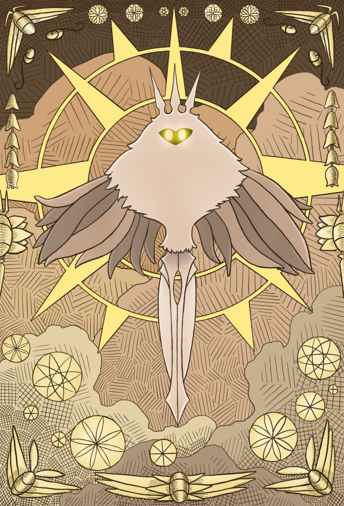
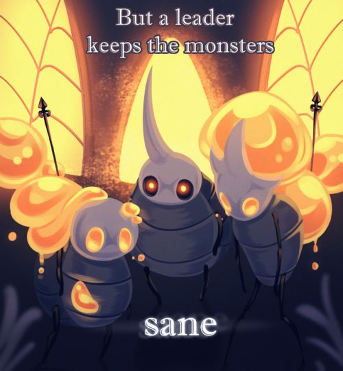

Historia principal
Introducción
Antes del reino de Hallownest existía una poderosa entidad conocida como el Destello, adorada por la tribu de las polillas.
Bajo su luz surgió un reino donde numerosos artrópodos encontraron un hogar. Entre ellos destacaban las Mantis, con su propio gobierno, y las Abejas, que permanecían aisladas en su colmena.
A primera vista todo parecía prosperidad y armonía. Sin embargo, la realidad era muy distinta.
El Destello utilizaba la mente de sus seguidores para mantener su influencia, concediendo deseos a cambio de su devoción.
Todo cambiaría con la llegada de un nuevo ser que alteraría el destino del reino para siempre.

El Rey Pálido
La tribu de los Wyrm existía desde la misma época que Destello y poseía un poder comparable al suyo. Sin embargo, por razones desconocidas, la especie comenzó a extinguirse.
Cuando el último Wyrm murió, renació bajo una nueva forma. Más pequeño en tamaño, pero conservando su inmensa sabiduría, surgió el ser que sería conocido como el Rey Pálido.
El Rey Pálido reveló la verdad a los habitantes de Hallownest y les mostró un camino distinto al de la adoración al Destello.
Con la ayuda de los Cinco Grandes Caballeros y el apoyo de la Dama Blanca, inició una nueva era para el reino.
La Edad de Oro
Hallownest entró en una era de prosperidad sin precedentes. Durante este período se lograron grandes avances y se desarrollaron medios de transporte como los tranvías y los ciervocaminos, además del descubrimiento de los amuletos.
Cada zona de Hallownest empezó a desempeñar un papel importante en la sociedad, como Nidoprofundo, donde se empezaba a desarrollar un nuevo tranvía o en Límite del Reino, donde se creó un coliseo para disfrute de los habitantes.
La Ciudad de Lágrimas se convirtió en la capital de este próspero reino, pero lo bueno no duró demasiado.

La infección
Destello había estado planeando su venganza todo este tiempo, y lo consiguió
Aprovecho la mente de artrópodos débiles otra vez, que aunque la olvidaran, recordaban el gusto que sentían al recibir deseos. Ella se les aparecía en sueños, y cada vez los sueños se hicieron más frecuentes, y dolorosos.
Era como una infección. Al final los pobres artrópodos no pudieron más y se volvieron locos, agresivos y más fuertes. El sueño fue tan poderoso que tomó forma física, era como un moco o líquido naranja y se propagó por el aire.
Las tribu de artrópodos de mente más privilegiada pudieron sobrevivir, aunque alguno no resistió la tentación de tener tanto poder.
Destello ya no se conformaba con gobernar mentes, ahora quería destruirlo todo. Parecía todo perdido. Pero el rey Pálido no dejaria caer su reíno sin antes dar guerra

Los recipientes o vasijas
El Rey intentó encontrar una solución a esta plaga, y pensó que para vencer a la luz, se necesita oscuridad, así que fue al Abismo y empezó a experimentar con él para crear a un receptáculo puro.
Necesitaba crear algo capaz de contener la infección en su interior, y puesto que el vacío era eso, vacío, lo aprovechó para intentar crear a un ser capaz de cumplir ese cometido.
Para salvar Hallownest, el Rey Pálido sacrificó incontables vidas en el Abismo buscando un recipiente perfecto.
Tardó muchos años en encontrar un receptáculo puro, mientras Destello amenazaba con aniquilar a los artrópodos, hasta que un día, lo consiguió.